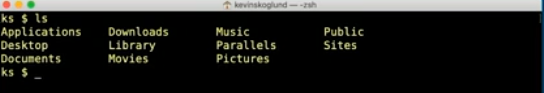
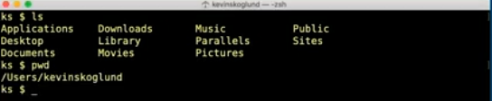
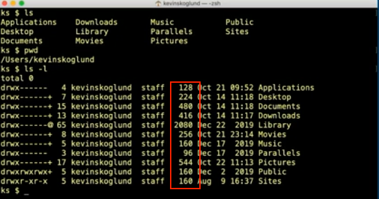
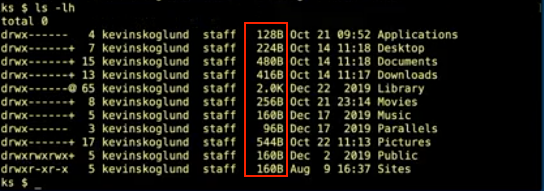
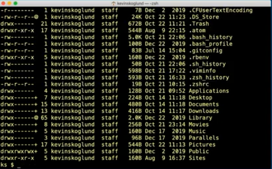
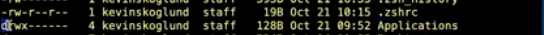
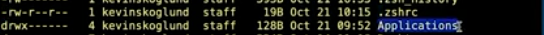

When you first login into terminal, Unix will log you into your home directory
ls will show the folders located in your home directory
We can find our current directory with the pwd command
which stands for "present working directory"
it returns the path to the current directory
ls with the -l option shows the folders within the present working directory along with more details
the fifth column is the size of the file
we can use the -lh option to see the size in "human readable" format
another option for ls we can us is -a, which stands for all.
it returns all the files in the current directory including the hidden files that begin with a dot (.)
the d at the beggining means the file is a directory
the application folder is a directory which means there are files within it
the - at the beggining means that it is just a file